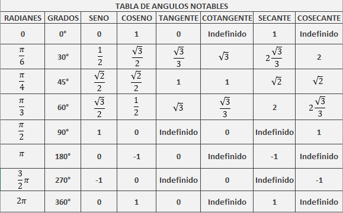

Metodología de Investigación
Psicólogo organizacional.
Objetivo: entender y ayudar a entender sobre temas relacionados a:
Vectores
Igualdad de vectores, Operación con vectores, propiedades de operaciones vectoriales, norma y distancia, producto escalar y ortogonalidad.
Matrices
Definición, operaciones con matrices, sistemas de ecuaciones en forma matricial, propiedades de la multiplicación de matrice, potencias de matrices, matriz identidad, matriz transpuesta, determinantes, matrices diagonales, etc.
\[\overline{x} = (x_1, x_2, \cdots, x_n) \quad \text{(fila)}\]
\[\overline{x} = \begin{pmatrix}x_1 \\ x_2 \\ \vdots \\ x_n\end{pmatrix} \quad \text{(columna)}\]
Ejemplos:
\(\overline{x} = (2, 3, -1)\) → dimensión 3
\(\overline{x} = (-2, \sqrt{3}, 2, 0)\) → dimensión 4
Dos vectores \(\overline{x}\) e \(\overline{y}\) de dimensión \(n\) son iguales si todas sus componentes correspondientes son iguales:
\[\overline{x} = \overline{y} \iff x_i = y_i \quad \forall i = 1, \cdots, n\]
Ejemplo: \[(1,-2,0) \neq (1,0,0)\]
Suma de vectores:
\[\overline{x} + \overline{y} = (x_1 + y_1, x_2 + y_2, \ldots, x_n + y_n)\]
Multiplicación por escalar:
\[\alpha \overline{x} = (\alpha x_1, \alpha x_2, \ldots, \alpha x_n)\]
Diferencia de vectores: \[\overline{x} - \overline{y} = (x_1 - y_1, x_2 - y_2, \ldots, x_n - y_n)\]
Producto escalar (producto punto): \[\overline{x} \cdot \overline{y} = \sum_{i=1}^n x_i y_i\]
Vector nulo: \[\overline{0} = (0, 0, \ldots, 0)\]
Ejemplo de operaciones: \[\overline{x} = (2, -4, 1), \quad \overline{y} = (3, 6, -5)\]
\[\overline{x} + 2\overline{y} = (8, 8, -9)\] \[\overline{x} - \overline{y} = (-1, -10, 6)\] \[\overline{x} \cdot \overline{y} = -23\]
Dados \(\overline{x}, \overline{y} \in \mathbb{R}^n\) y escalares \(\alpha, \beta\):
\[\alpha\overline{x} + \beta\overline{y} = \begin{pmatrix} \alpha x_1 + \beta y_1 \\ \alpha x_2 + \beta y_2 \\ \vdots \\ \alpha x_n + \beta y_n \end{pmatrix}\]
Ejemplo: Resolver \(3\overline{x} - 4\overline{y} = 2\overline{z}\)
Solución paso a paso: \[\overline{x} = \frac{2}{3}\overline{z} + \frac{4}{3}\overline{y}\]
En \(\mathbb{R}^2\) y \(\mathbb{R}^3\), un vector es el conjunto de todos los segmentos orientados equivalentes: misma magnitud (longitud), dirección (ángulo de inclinación) y sentido (signo positivo o negativo).
Ejemplo: \(\overline{x} = (-2, 3)\) representa un desplazamiento de -2 unidades en x y +3 unidades en y
Nota: Diferentes segmentos pueden representar el mismo vector.
El vector \(\vec{w} = (2, 3)\) puede representarse con diferentes segmentos orientados:
Desde el origen \((0,0)\) hasta \((2,3)\).
Desde \((1,1)\) hasta \((3,4)\).
Norma (longitud) de un vector: \[\|\overline{x}\| = \sqrt{x_1^2 + x_2^2 + \cdots + x_n^2}\]
Ejemplo: \[\overline{x} = (4, 1, -2, 0, 3)\] \[\|\overline{x}\| = \sqrt{16 + 1 + 4 + 9} = \sqrt{30} \approx 5.42\]
Distancia entre vectores: \[d(\overline{x}, \overline{y}) = \|\overline{x} - \overline{y}\|\]
Propiedades del producto escalar:
Conmutatividad
\(\overline{x} \cdot \overline{y} = \overline{y} \cdot \overline{x}\)
Distributividad respecto a la suma
\(\overline{x} \cdot (\overline{y} + \overline{z}) = \overline{x} \cdot \overline{y} + \overline{x} \cdot \overline{z}\)
Asociatividad con escalares \((\alpha\overline{x}) \cdot \overline{y} = \alpha(\overline{x} \cdot \overline{y})\)
Ortogonalidad: \[\overline{x} \perp \overline{y} \iff \overline{x} \cdot \overline{y} = 0\]
Ejemplo: \[\overline{x} = (2,1), \overline{y} = (-3,6)\] \[\overline{x} \cdot \overline{y} = 0 \Rightarrow \overline{x} \perp \overline{y}\]
\[\cos \theta = \frac{\overline{x} \cdot \overline{y}}{\|\overline{x}\| \|\overline{y}\|}, \quad \theta \in [0, \pi]\]

\[\overline{x} \cdot \overline{y} = \|\overline{x}\| \|\overline{y}\| \cos \theta\]
Si \(\overline{x} \perp \overline{y}\), entonces \(\theta = 90^\circ\)
Una matriz de orden \(m \times n\) es un arreglo rectangular de números:
\[A = \begin{pmatrix} a_{11} & \cdots & a_{1n} \\ \vdots & \ddots & \vdots \\ a_{m1} & \cdots & a_{mn} \end{pmatrix}\]
\[\begin{pmatrix}2 & 3 \\ 1 & 4\end{pmatrix} \quad (2 \times 2)\]
\[\begin{pmatrix}1 & 0 & 2 & 3 \\ -2 & \sqrt{5} & 4 & 0\end{pmatrix} \quad (2 \times 4)\]
\(A = B\) si \(a_{ij} = b_{ij} \quad \forall i,j\)
\(A + B = (a_{ij} + b_{ij})\)
\(\alpha A = (\alpha a_{ij})\)
\[A = \begin{pmatrix}1 & 2 & 3 \\ 6 & -2 & 0\end{pmatrix}, \quad B = \begin{pmatrix}0 & -2 & 8 \\ 7 & 1 & 0\end{pmatrix}\]
\[A + B = \begin{pmatrix}1 & 0 & 11 \\ 13 & -1 & 0\end{pmatrix}\]
Para \(A_{m \times n}\) y \(B_{n \times p}\):
\[AB = C_{m \times p} \text{ donde } c_{ij} = \sum_{k=1}^n a_{ik}b_{kj}\]
\[A = \begin{pmatrix}3 & 1 & 2 \\ -2 & 1 & 0 \\ 0 & 4 & 1\end{pmatrix}, \quad B = \begin{pmatrix}3 & 1 \\ 2 & 2 \\ 4 & 3\end{pmatrix}\]
\[AB = \begin{pmatrix}19 & 11 \\ -4 & 0 \\ 12 & 11\end{pmatrix}\]
Nota: \(AB \neq BA\) en general
Ejemplo: \[ \begin{cases} 2x_1 + 4x_2 + 5x_3 = 6 \\ 3x_1 - 2x_2 + 7x_3 = 4 \end{cases} \]
Se puede representar como:
\[ \begin{pmatrix} 2 & 4 & 5 \\ 3 & -2 & 7 \end{pmatrix} \begin{pmatrix} x_1 \\ x_2 \\ x_3 \end{pmatrix} = \begin{pmatrix} 6 \\ 4 \end{pmatrix} \]
Notación compacta: \(A\vec{x} = \vec{b}\)
¡Importante! El producto de matrices no es conmutativo: \(AB \neq BA\) en general
Para una matriz cuadrada \(A\):
\[A^k = A^{k-1}A \quad \text{para} \quad k = 1, 2, 3, \ldots\]
Definiciones:
\(A^1 = A\)
\(A^0 = I\) (matriz identidad)
La matriz identidad de orden \(n \times n\) se denota por \(I_n\) (o simplemente \(I\)):
\[ I_n = \begin{pmatrix} 1 & 0 & \cdots & 0 \\ 0 & 1 & \cdots & 0 \\ \vdots & \vdots & \ddots & \vdots \\ 0 & 0 & \cdots & 1 \end{pmatrix}_{n \times n} \]
Propiedad fundamental:
\[AI = IA = A\]
La matriz identidad actúa como el número 1 en la multiplicación de matrices.
Dada una matriz \(A\), su transpuesta \(A^T\) se obtiene intercambiando filas por columnas.
Ejemplo: \[ A = \begin{pmatrix} 2 & 1 & 0 & -3 \\ 3 & 1 & -2 & 4 \end{pmatrix} \quad \Rightarrow \quad A^T = \begin{pmatrix} 2 & 3 \\ 1 & 1 \\ 0 & -2 \\ -3 & 4 \end{pmatrix} \]
Matriz simétrica: \(A\) es simétrica si \(A = A^T\)
Ejemplo de matriz simétrica: \[ \begin{pmatrix} 2 & 4 & 6 \\ 4 & 1 & 5 \\ 6 & 5 & 3 \end{pmatrix} \]
Para una matriz \(2 \times 2\): \[ A = \begin{pmatrix} a_{11} & a_{12} \\ a_{21} & a_{22} \end{pmatrix} \]
Su determinante es: \[ |A| = a_{11}a_{22} - a_{21}a_{12} \]
Ejemplos:
\(\begin{vmatrix} 2 & 1 \\ 3 & 2 \end{vmatrix} = (2)(2)-(1)(3) = 1\)
\(\begin{vmatrix} 3 & -1 \\ 5 & 4 \end{vmatrix} = (3)(4)-(5)(-1) = 17\)
\(\begin{vmatrix} 0 & 0 \\ 2 & 6 \end{vmatrix} = 0\)
Para el sistema: \[ \begin{cases} a_{11}x_1 + a_{12}x_2 = b_1 \\ a_{21}x_1 + a_{22}x_2 = b_2 \end{cases} \]
Las soluciones son: \[ x_1 = \frac{\begin{vmatrix} b_1 & a_{12} \\ b_2 & a_{22} \end{vmatrix}}{|A|}, \quad x_2 = \frac{\begin{vmatrix} a_{11} & b_1 \\ a_{21} & b_2 \end{vmatrix}}{|A|} \]
Ejemplo: \[ \begin{cases} 2x_1 + 3x_2 = 4 \\ 5x_1 - 6x_2 = 8 \end{cases} \]
Solución: \[ x_1 = \frac{-48}{-27} = \frac{16}{9}, \quad x_2 = \frac{-4}{-27} = \frac{4}{27} \]
Una matriz cuadrada \(D = (d_{ij})\) es diagonal si \(d_{ij} = 0\) para todo \(i \neq j\).
Ejemplos:
\(\begin{pmatrix} 2 & 0 \\ 0 & 3 \end{pmatrix} = \text{diag}(2,3)\)
\(\begin{pmatrix} 3 & 0 & 0 \\ 0 & -2 & 0 \\ 0 & 0 & 4 \end{pmatrix} = \text{diag}(3,-2,4)\)
Determinante: Para matrices diagonales, \(|D|\) es el producto de los elementos de la diagonal.
Para \(2 \times 2\): \(|D| = d_{11}d_{22}\)
Para \(n \times n\): \(|D| = \prod_{i=1}^n d_{ii}\)
Una matriz cuadrada es triangular superior si todos los elementos por debajo de la diagonal principal son cero.
Ejemplos:
\(\begin{pmatrix} 2 & 3 \\ 0 & 1 \end{pmatrix}\)
\(\begin{pmatrix} 1 & 2 & 0 \\ 0 & -3 & 1 \\ 0 & 0 & 2 \end{pmatrix}\)
Propiedad: El determinante de una matriz triangular superior es el producto de los elementos de su diagonal principal.
Ejemplo: \(\begin{vmatrix} 2 & 3 \\ 0 & 1 \end{vmatrix} = (2)(1) = 2\)
Definición:
Para una matriz cuadrada \(A = (a_{ij})\), el menor \(M_{ij}\) es el determinante de la submatriz obtenida al eliminar la fila \(i\) y columna \(j\) de \(A\).
El cofactor \(C_{ij}\) se define como: \[C_{ij} = (-1)^{i+j} M_{ij}\]
Ejemplo: \[ A = \begin{pmatrix} 1 & 0 & 3 \\ 4 & -1 & 2 \\ 0 & -2 & 1 \end{pmatrix} \]
Para una matriz \(A\) de orden \(n \times n\), el determinante se puede calcular por:
Expansión por filas: \[|A| = \sum_{j=1}^n a_{ij} C_{ij} \quad (\text{para cualquier fila } i)\]
Expansión por columnas: \[|A| = \sum_{i=1}^n a_{ij} C_{ij} \quad (\text{para cualquier columna } j)\]
Ejemplo: \[ A = \begin{pmatrix} 1 & 2 & -1 \\ 3 & 0 & 1 \\ 4 & 2 & 1 \end{pmatrix} \]
Expandiendo por la fila 1: \[|A| = 1(0-2) - 2(3-4) -1(6-0) = -6\]
Para un sistema \(A\vec{x} = \vec{b}\) con \(|A| \neq 0\), la solución es:
\[x_k = \frac{|A_k|}{|A|}\]
donde \(A_k\) es la matriz obtenida al reemplazar la columna \(k\) de \(A\) por \(\vec{b}\).
Ejemplo:
\[ \begin{cases} 2x_1 + 2x_2 - x_3 = -3 \\ 4x_1 + 2x_3 = 8 \\ 6x_2 - 3x_3 = -12 \end{cases} \]
¡Importante! En general \(|A+B| \neq |A| + |B|\)
Una matriz \(A\) de orden \(n \times n\) es inversible si existe \(A^{-1}\) tal que: \[AA^{-1} = A^{-1}A = I\]
Condición: \(A\) es invertible \(\iff |A| \neq 0\)
Ejemplo (2×2): \[ A = \begin{pmatrix} 5 & 6 \\ 5 & 10 \end{pmatrix}, \quad A^{-1} = \begin{pmatrix} \frac{1}{2} & -\frac{3}{10} \\ -\frac{1}{4} & \frac{1}{4} \end{pmatrix} \]
Fórmula para 2×2: \[ A = \begin{pmatrix} a & b \\ c & d \end{pmatrix} \Rightarrow A^{-1} = \frac{1}{|A|} \begin{pmatrix} d & -b \\ -c & a \end{pmatrix} \]
Aplicación: Resolver \(A\vec{x} = \vec{b}\): \[\vec{x} = A^{-1}\vec{b}\]
Ejemplo: \[ \begin{cases} 2x_1 + 3x_2 = 5 \\ x_1 + 4x_2 = 10 \end{cases} \Rightarrow \vec{x} = \begin{pmatrix} 4/5 & -3/5 \\ -1/5 & 2/5 \end{pmatrix} \begin{pmatrix} 5 \\ 10 \end{pmatrix} = \begin{pmatrix} -2 \\ 3 \end{pmatrix} \]
Los vectores \(\{\vec{x}_1, \vec{x}_2, \ldots, \vec{x}_m\}\) en \(\mathbb{R}^n\) son linealmente independientes (l.i.) si: \[\sum_{i=1}^m \alpha_i \vec{x}_i = \vec{0} \implies \alpha_i = 0 \forall i\]
Ejemplo l.i.: \[ \vec{x}_1 = (3,1), \vec{x}_2 = (4,6) \] La única solución a \(\alpha_1 \vec{x}_1 + \alpha_2 \vec{x}_2 = \vec{0}\) es \(\alpha_1 = \alpha_2 = 0\)
Ejemplo l.d.:
\[ \vec{x}_1 = (3,4), \vec{x}_2 = (9,12) \] Son l.d. porque \(\vec{x}_2 = 3\vec{x}_1\)
Observaciones:
Un solo vector no nulo es l.i.
Cualquier conjunto que incluya \(\vec{0}\) es l.d.
En \(\mathbb{R}^n\) hay como máximo \(n\) vectores l.i.
Ejemplo en \(\mathbb{R}^3\): \[ \vec{x}_1 = (2,1,3), \vec{x}_2 = (4,0,2), \vec{x}_3 = (7,2,12) \] Son l.d. porque \(\vec{x}_3 = 2\vec{x}_1 + 3\vec{x}_2\)
El rango \(\rho(A)\) es el máximo número de columnas (o filas) linealmente independientes.
Ejemplos:
\[ A = \begin{pmatrix} 2 & 1 & 7 \\ 1 & 0 & 2 \\ 3 & 2 & 12 \end{pmatrix}, \quad \rho(A) = 2 \text{ (pues } C_3 = 2C_1 + 3C_2) \]
\[ B = \begin{pmatrix} 1 & 6 \\ 3 & 18 \end{pmatrix}, \quad \rho(B) = 1 \]
Propiedad: \(\rho(A) = \rho(A^T)\)
Cota: Para \(A_{m \times n}\), \(\rho(A) \leq \min\{m,n\}\)
Lang, S. (2010). Álgebra lineal (3rd ed.). Springer.
Strang, G. (2016). Introduction to linear algebra (5th ed.). Wellesley-Cambridge Press.
Tsukada, M., Wang, L., Matsubara, S., & Takemura, N. (2023). Linear algebra with Python. Springer.
Strang, G. (2020). Linear algebra for everyone. Wellesley-Cambridge Press.